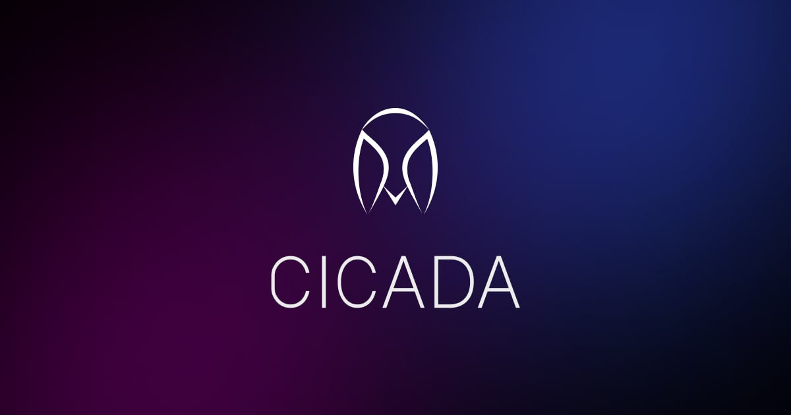

Research-led explainers
Breaking down rtUSQ, its structure and the mechanics behind yield-bearing assets.
DeFi research, educational content and product storytelling that makes the technical side of onchain finance more approachable.

My ambassador work focuses on explaining how DeFi products are structured, what their mechanisms mean for users, and how the ecosystem is evolving.
Breaking down rtUSQ, its structure and the mechanics behind yield-bearing assets.
Turning launch milestones and protocol announcements into clear, accessible posts.
Discussing sustainable DeFi yield and broader market approaches.
Explore the project's own information and official channels. These are external resources, separate from my portfolio pieces.